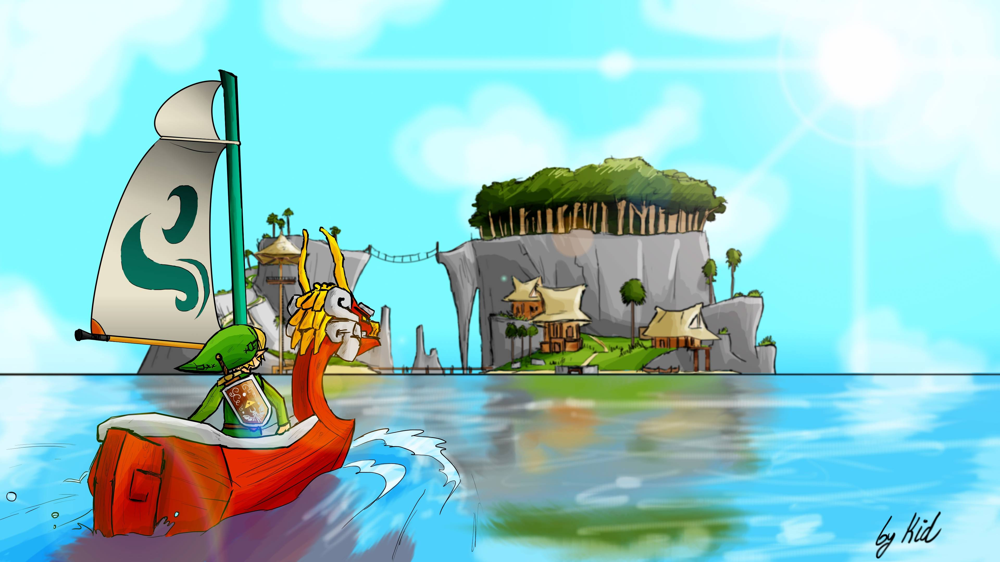

Adult Hero Timeline

Wind Waker
WARNING: There is no short way to tell this story. So buckle in for a LONG tale.
The game begins with a retelling of an ancient legend among the people of the Great Sea; a vast ocean filled with many small islands and various races. According to the legend, there was once a prosperous kingdom where an omnipotent golden power was hidden. But then, a great evil found and stole this power, using it to spread darkness until a young boy dressed in green sealed the evil with the Blade of Evil's Bane. The boy became known as the Hero of Time and passed into legend. Basically, the story of "Ocarina of Time" has faded away into myth rather than fact. However, the evil that had been sealed began to return, but the hero did not appear; the people could only pray to their gods. The inhabitants of the Great Sea do not know what happened to the kingdom, but it is clear that this legend is the story of The Legend of Zelda: Ocarina of Time.
The focus shifts to the present on a small southern island known as Outset Island, where the young Link lives with his sister Aryll and his grandmother. As it is Link's birthday, he receives the familiar green clothes and cap. Aryll's present to Link is permission to use her Telescope for the day. As he looks through the telescope, he sees an enormous bird, the Helmaroc King, carrying a girl in its claws to a nearby forest. The bird is being pursued by a pirate ship launching stones at it. After receiving a sword from the local swordsman, Link sets out to investigate. Link rescues the girl only to have Aryll taken by the Helmaroc King as he returns.
The girl rescued in the forest is Tetra, captain of the pirate ship and its crew. At Link's request, she takes Link on her ship to the Forsaken Fortress, where a mysterious figure is holding Aryll and several other kidnapped girls. When Link, Tetra, and her crew arrive at the fortress, Link is placed in a barrel and catapulted to the fortress. But before he can save Aryll he is thrown from the fortress by the Helmaroc King, commanded by a mysterious figure, and left to die. A talking boat called the King of Red Lions finds the unconscious Link and takes him near an island known as Windfall Island. As he awakens, Link is startled to see a talking boat, but the King of Red Lions tells him that he is on Link's side. He explains that the mysterious master of the Forsaken Fortress is Ganondorf, the evil of legend. The King of Red Lions also tells him that in order to stand a chance against Ganondorf, Link must travel to Dragon Roost Island and obtain a mighty treasure there. After purchasing a Sail, Link sets sail for Dragon Roost Island.
Once at the island, the King of Red Lions instructs Link to find a dragon named Valoo and ask him for a jewel called Din's Pearl. He also presents Link with the Wind Waker, a magical baton that allows the user to control the wind and its magic. Link disembarks and eventually, he comes upon the dwelling where the Rito, a race of bird-like creatures, live. The Rito Chieftain tells Link that his son Prince Komali has Din's Pearl, but is unwilling to relinquish it. Prince Komali is of the age that members of the Rito tribe traditionally climb to the top of Dragon Roost to get a scale from Valoo, which allows a Rito to grow wings. However, Valoo has recently grown violent and unpredictable and Prince Komali is fearful to attempt the journey. He agrees to give Link the pearl if Link can remedy what ails Valoo. With the help of Medli, a female Rito in charge of tending to Valoo, Link makes his way to Valoo and defeats Gohma, a insect-like monster that had been torturing Valoo's tail. Valoo returns to his calm self, earning Link Din's Pearl and Komali's respect.

With the first pearl in hand, Link sails to the Forest Haven to ask Great Deku Tree for Farore's Pearl. Inside, Link meets the Deku Tree and the Koroks, spirits of the forest. Aware that Ganondorf has returned, the Deku Tree agrees to give Link the pearl when Linder, one of the Koroks, enters and informs the Deku Tree that Makar, a young Korok that plays a stringed instrument, has fallen into the Forbidden Woods. The Deku Tree thusly asks Link to rescue Makar. Link does so, allowing the ceremony to be completed, and receives Farore's Pearl. Link then travels to Greatfish Isle to find Jabun, a great water spirit, but when he arrives he finds that the island has been utterly ruined. Jabun managed to escape to an enclosed cave on Outset Island. They sail back to Link's home of Outset Island, where Link gains the entrance to a cave in which Jabun had been hiding. During a conversation between Jabun and the King of Red Lions, Jabun gives Link Nayru's Pearl.
Link takes the three pearls to the Triangle Islands, inserting one into a statue on each island. The statues then shoot out three beams of light, forming an image of the Triforce on the sea. From the point straight in the middle of this projected Triforce, the Tower of the Gods rises from deep beneath the Great Sea. Link enters the tower and is taken beneath the waters to Hyrule Castle, filled with frozen enemies, frozen in time, and drained of color. Link opens a hidden staircase and descends beneath the castle, where he finds the Master Sword. Link removes the sword, and time and color flows through Hyrule Castle once more. Link uses the powerful blade to defeat the now-active enemies, and returns to the surface.
With the Master Sword in hand, Link returns to the Forsaken Fortress to challenge Ganondorf. Meeting Tetra and the pirates there, Link rescues the captives and defeats the Helmaroc King. At the top of the main tower, he confronts Ganondorf, but is quickly defeated. Ganondorf tells Link that taking the Master Sword has fully lifted the seal, unbinding his full power; furthermore, the Master Sword has lost its power and can no longer repel evil. Ganondorf raises his sword to attack Link, but Tetra intervenes. Ganondorf grabs Tetra, causing the Triforce of Power held within him to resonate. Ganondorf realizes that Tetra is wearing a Triforce fragment on a necklace and refers to her as "Princess Zelda". Prince Komali, having grown wings, flies in with Quill and takes Link and Tetra away. Valoo swoops into view, breathing fire and sending Ganondorf's chamber up in flames, but somehow, Ganondorf survives.
Link and Tetra sail back to the castle at the bottom of the sea. Suddenly, a voice speaks from a stone that Tetra gave to Link. It tells them to enter the castle and find its owner. There they meet the king of Hyrule and he admits that he assumed the guise of the King of Red Lions. King Hyrule tells Link and Tetra that the prayers of the people in the legend were indeed answered — the gods sealed Ganondorf and all of Hyrule with him by flooding the kingdom with a torrential downpour, ordering those chosen to rebuild to take refuge on the mountaintops (which would soon form the islands of the Great Sea). King Hyrule gives a Triforce fragment to Tetra. Combining it with the fragment on her necklace, Tetra now holds the completed Triforce of Wisdom and is revealed to be Princess Zelda. Leaving Zelda, Link returns to the surface.

When the Master Sword fails to defeat Ganondorf, the King of Red Lions assumes that something must have happened to the sages empowering the Master Sword, which in turn had caused the sword to lose its power. Link travels to the ancient temples of Wind and Earth, only to find that Laruto and Fado, sages of Earth and Wind, have been murdered by Ganondorf's servants. Their spirits appear before Link, asking of him to awaken the descendants of the line of sages, so that they may restore the Master Sword. To this end, Link is taught two songs known as the "Earth God's Lyric" and "Wind God's Aria". On Dragon Roost island, Link plays the "Earth God's Lyric" for Medli, awakening in her the knowledge that she is the sage of Earth. Link and Medli travel to the Earth Temple. In the chamber of prayers, Medli begins praying to the gods, restoring some power to Link's sword. Link leaves Medli to continue praying and sails to the Forest Haven. Link finds Makar and plays for him the "Wind God's Aria", awakening Makar as the new Sage of Wind. Together they travel to the Wind Temple, where Makar prays and restores the Master Sword to its full power.Link must then recover the Triforce of Courage, in order to open the gateway between the Great Sea and the sunken land of Hyrule once more. Link finds detailed charts depicting the location of each shard. Link finds and extracts the shards from the bottom of the Great Sea. Upon the completion of the Triforce of Courage, the true power that dwells inside Link awakens, marking him as the Hero of Winds.
With the restored Master Sword and the Triforce of Courage, Link returns once more to Hyrule Castle, where Zelda disappears before him, having been captured by Ganon and taken to his castle. Link breaks through the barrier beyond Hyrule Castle and enters Ganon's Tower. Inside the tower, Link obtains the Light Arrow, Ganondorf's weakness. After traversing the tower, Link reaches a grand chamber where he encounters Puppet Ganon. Puppet Ganon transforms into many forms during the battle, but is eventually defeated. Suddenly, Ganondorf appears before Link, acknowledging that Link must be the Hero of Time reborn. On the roof, Ganondorf tells Link why he wants Hyrule and that fate has allowed him to bring all of the pieces of the Triforce together, just as he had with the Hero of Time. He then stuns Link, causing the three Triforces to be extracted from Ganondorf, Link, and Zelda and to combine together to form the complete Triforce. Before Ganondorf can reach the Triforce, however, the King of Hyrule suddenly appears, touching the Triforce. He wishes for a future, hope for Link and Zelda, and asks that Hyrule be washed away forever. The Triforce splits apart and water from the ocean above begins to pour down.
With the ocean falling all around the tower, Ganondorf laughs, believing that the King has simply ensured Link's and Zelda's destruction. Ganondorf and Link begin battle; Zelda assists by shooting Light Arrows at Link, who deflects them at Ganondorf with his shield. After a hard-fought battle, Link lands the final blow and plunges the Master Sword into the forehead of Ganondorf, turning him to stone and sealing him. Link and Tetra float to the surface inside bubbles, leaving Ganondorf and the king to be buried under the waves with Hyrule. Searching for a new land to call Hyrule, Link and Zelda sail away together on the now lifeless King of Red Lions and the pirate ship, which eventually leads to the plots of...

Phantom Hourglass
Phantom Hourglass is set several months after the events of "The Wind Waker" in the "Adult Hero" Timeline. The game opens with a retelling of the events of The Wind Waker, which ended with Link riding aboard Tetra's ship. Link, Tetra, and her pirates are at sea and encounter the "Ghost Ship" rumored to sail the waters in the area, taking sailors and residents from the nearby islands. Tetra, convinced that the Ghost Ship is simply a bunch of trouble-making pirates, is determined to teach them that pirates have rules, too. When a mysterious ship appears in the middle of a dense fog, Tetra jumps aboard to explore. As Tetra screams the ship pulls away and begins to vanish with her on board. Link attempts to leap over and save her only to fall into the water himself.
After having a vision of Tetra being surrounded by darkness and calling for his help, Link washes up on Mercay Island and meets a fairy named Ciela. Ciela teams up with Link and tells him to see her "grandfather," an old man named Oshus. Oshus tells Link to meet Linebeck, who is in the city, but the bridge is out. When Link reports this to Oshus, he tells Link of a second route that is filled with monsters. Ciela recalls seeing a sword in Oshus's warehouse, which Link promptly retrieves. Oshus discovers that Link has stolen it, but lets him keep it. Link travels to the far side of the island and enters the Temple of the Ocean King, where he comes across a trapped Captain Linebeck, who had been searching for treasure inside. Linebeck tells Link that the temple drains the life out of living things if one stays in it for too long.
Link is given the task to restore the Three Spirits of Power, Wisdom, and Courage from the temples of Fire, Wind, and Courage, respectively. These spirits join Link and assist him in the Ocean King's Temple, where he receives the Phantom Hourglass, a strange trinket that allows Link to resist the draining effect of the temple for a limited time, depending on the amount of sand within. However, after defeating the boss of the Temple of Courage, the Spirit of Courage is saved but it has no color and lifelessly floats. Oshus arrives at the Island and fuses Ciela with the colorless fairy, revealing that she is the Spirit of Courage herself. With the help of the spirits, Linebeck and Link then set off to pursue the Ghost Ship. Link and Linebeck find Tetra; however, most of her life force has been drained from her and she has been turned to stone. Oshus arrives and reveals that he is in fact the Ocean King. According to him, some years prior, an evil monster named Bellum appeared, hungry to consume the life force possessed by all living things. He used this absorbed life force to create powerful monsters and to seal away the three Fairies of Power, Wisdom, and Courage. Ciela, the Fairy of Courage, was able to create a clone of herself and fled, but as a result, lost her memory. The Ocean King tried to fight Bellum, but failed, with his true self still sealed by Bellum's evil.
Link learns that the only way to defeat Bellum is to forge the Phantom Sword from three unique, "Pure Metals" around the local islands. However, Linebeck is unwilling to help any further, as there was no treasure on the Ghost Ship. The Ocean King then offers Linebeck one wish if he will continue to help Link. Linebeck immediately agrees, and the trio set off. After collecting the materials and forging the Phantom Sword, Link descends to the bottom level of the Temple, and after a fierce battle, appears to have slain the beast Bellum. Tetra returns to normal, but just as the group is about celebrate their victory, Bellum re-emerges from the ocean depths and takes Tetra again, possessing the Ghost Ship while doing so. In the ensuing battle between the S.S. Linebeck and the Ghost Ship, Linebeck's ship is lost. Additionally, Link and Tetra are captured. Linebeck then reluctantly picks up the Phantom Sword, shivering with fear and, sacrificing his own freedom, is able to free Link and Tetra. He is able to quickly give Link the Phantom Sword before being possessed by Bellum. Link battles the possessed Linebeck and manages to drive out the evil spirit from his body. Bellum is then defeated once more—this time, forever.
As the adventure closes, the sand from the Phantom Hourglass is released back into the sea. Oshus, now in his true form of a white whale, readies to depart with the Spirits, while Linebeck, surprising everyone, wishes not for treasure but for his ship back. The Ocean King reveals that they are not in their own world, but that everyone was transported to his world when they boarded the Ghost Ship. After they all say their goodbyes, Link and Tetra find themselves back on the pirate ship. It appears that only ten minutes have passed since Tetra jumped on board the Ghost Ship. The rest of the crew say that nothing momentous occurred, and insist that Link and Tetra's adventure was a dream. However, Link still possesses the now empty Hourglass, and spies Linebeck's ship on the horizon, knowing full well that his adventure was real.
Spirit Tracks
Following the events of "Phantom Hourglass", Link, Tetra, and the other pirates come across a new land that is ruled over by the Spirits of Good, who were responsible for sealing the land's tyrant, Malladus, into the earth after the concourse of the Spirit War with the railroad tracks called Spirit Tracks that spiral and work their way all over the vibrant landscape. A hundred years later, in (new) Hyrule Castle, Princess Zelda is seen handing Link a diploma, honoring him as an official Royal Engineer. At the same time however, Zelda also slips Link a personal message stating that she has been suspicious of Chancellor Cole, Princess Zelda's right-hand adviser. After learning such information, Link sneaks Zelda out of the castle and meets up with Alfonzo, his master who trained him into being a Royal Engineer. He helps Link and Zelda escape the castle and get on a train, when suddenly, the tracks disappear, causing the train to crash. Chancellor Cole and his assistant, Byrne, then confronts the three: giving the Demon Train enough time to disrupt the natural order and structure of the generation point of the Spirit Tracks, the Tower of Spirits. Chancellor Cole takes away Zelda's body, yet her spirit appears after Link reawakens in Hyrule Castle, where only Link can see her. When Link meets Zelda as a spirit for the first time, Zelda gives him the Spirit Flute and then asks Link to take her to the Tower of Spirits to find out why the tracks disappeared. The only way to get to the tower now is by an old tunnel in the back of the castle.
When Link and Zelda reach the Tower of Spirits, they meet a strange old woman named Anjean, who calls herself a Lokomo. Anjean speaks to Link and Zelda about Malladus and as to why the tracks disappeared, then explains that the only way to restore the Spirit Tracks is to obtain Rail Maps from the Tower, which will reveal Spirit Tracks to four of the five temples across the land. It is up in the tower that Zelda realizes that she can possess Phantoms, which are the guardians of the tower. Lastly, Anjean tells Link that if he goes to Gage, a Lokomo like Anjean, Link and the Lokomo of the first four respective realms can reveal the path to the temples. Anjean then grants Link the Spirit Train, the sacred locomotive docked at the bottom level of the Tower, which Link uses throughout the rest of the game.
The temples visited are the Forest Temple, the Snow Temple, the Ocean Temple, and the Fire Temple. Once Link and Zelda restore the last of the Spirit Tracks, the last thing that they need to do to prevent Malladus from resurrecting is to lock him back under the Altar of the Demon King at the top of the tower. Link and Zelda climb the tower, only to meet, fight, and defeat Byrne again. Just as they reach the top of the tower, Malladus' resurrection is complete, and Zelda cannot return to her body because Malladus is occupying it. Byrne asks Malladus for powers that he always dreamed of, but because he once served the Spirits, Malladus will not give him the power. Instead, using his magic, he knocks him unconscious. Hastily, Cole and Malladus escape on Malladus' train, the Demon Train, and go back to the Dark Realm, where the Demon Train came from. Anjean then comes up to the top of the tower, and shows Link and Zelda that she was not killed by Byrne.
Link takes Byrne to his train, and Anjean tells Link and Zelda the final possibility to destroy Malladus. Link must go to the fifth (and at the time unexplored) temple, the Sand Temple from the desert, and obtain the Bow of Light. The Bow of Light has the power to split the soul of one from their body. Anjean then reveals previously unknown tracks far into the desert between the Fire and Ocean Realms. Link obtains the Bow of Light from the Sand Temple, only to find that Anjean can't find a way into the Dark Realm, halting the adventure further. Byrne then tells them about a Compass of Light that is below the Altar of the Demon King. That compass reveals all places in the world linked to the Dark Realm. Link and Zelda proceed to go to the Tower of Spirits for the final time to obtain the Compass of Light. Anjean then gives Link the Lokomo Sword, Anjean thinks Link is the one who is meant to use it. Link and Zelda obtain the Compass of Light, revealing a place linked to the Dark Realm. Link travels on the Spirit Train to that exact place to find a portal that leads into the darkness, and attempts to destroy Malladus once and for all.

Link and Zelda find the Demon Train in the Dark Realm, and a battle across a track road begins. Link fights using the train on his own, and eventually makes the Demon Train come to a halt, giving him a chance to go on board. Anjean gives Zelda a Phantom armor which she possesses and can use to help Link in the next battle. They both climb on top of the train to find Cole and Malladus. Cole then starts up the train and begins to attack them, while Malladus is on the end of the train firing lasers. Zelda and Link eventually reach the front of the train and Zelda grabs Malladus, giving Link the key opportunity to shoot him with the Bow of Light. Malladus is being split from Zelda's body, until the Demon Train crashes, leaving everyone in the land of Hyrule again.
Malladus' spirit leaves from Zelda's body, giving her a chance to retrieve it. At first, she is unable to due to the fact that she has been separated from her body for so long. Malladus is about to come back and possess Zelda's body until Byrne shows up and stops him. Byrne tells Zelda that she has to focus her power in order to return to it. She finally gets her body back, but Byrne loses his life after Malladus uses his magic to kill him. Malladus then decides he must stop Link and Zelda, and takes Cole's body. He then transforms into a giant beast and attempts to destroy them. However, Link and Zelda team up and fight against him. Link then deals the final blow in his forehead with the Lokomo Sword. Malladus dissolves into light, returning the world back to normal. Anjean comes to the battlefield, and uses magic to give life back to Byrne (not for an immediate revival, but for him to return several years later). Anjean then explains what she wanted Zelda and Link to do. Lokomos were placed on the Earth not only to watch over the Spirit Tracks, but mankind as well. Anjean believes that man doesn't need guidance anymore, so she and the other five Lokomos return to the heavens with Byrne. Anjean entrusts the land to Zelda, and tells Link he must help her watch over it.
Right before Link and Princess Zelda hop on the Demon Train, the latter asks the young hero about his future. Depending on the option chosen, there will be a slight difference on the post-credits scene. In all three possible cases, this scene begins with Zelda writing a book, with the Teacher accompanying her. If Link tells her that he'll continue being a train engineer, the final scene shows the princess hearing the Spirit Train whistling; she approaches the window and greets her savior as he navigates through the Forest Realm. If Link tells her that he'll remain as a swordsman instead, the final scene shows Zelda approaching the window to see Link practicing his combat abilities, although he is accidentally injured in the process. Finally, if Link tells her that he's still unsure regarding either career or skips the scene, the final scene simply shows Zelda continuing with her work.This is the final arc, of the Hero of Winds.